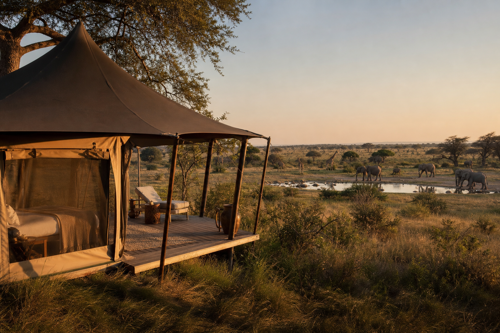
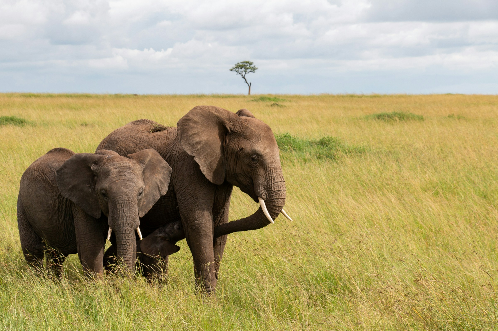

Sundowners Beside the Water
As the heat begins to fade, arrive at a quiet watering hole for drinks and canapés. Watch elephants, giraffes and zebras gather for their evening drink as the sky changes colour.
Where wild landscapes meet quiet sophistication
A wildlife journey is unlike any other kind of travel.
It asks you to slow down, look more closely and accept that nature sets the schedule. No two days are the same. The landscape changes with the light, animals move with the seasons and every sighting feels entirely your own.
Across Africa, the variety is extraordinary. Follow big cats across open savannah, watch elephants gather beside a river or trek through dense forest in search of mountain gorillas.
The most memorable journeys are not measured only by what you see, but by how you experience it: with the right guide, in the right place and with enough time to understand the world unfolding around you.

As the heat begins to fade, arrive at a quiet watering hole for drinks and canapés. Watch elephants, giraffes and zebras gather for their evening drink as the sky changes colour.
Follow expert guides through the dense vegetation of Bwindi Impenetrable Forest. The journey can be demanding, but the moment you encounter a gorilla family at close range is difficult to put into words.
Travel by light aircraft over rivers, plains and remote wilderness before landing close to your camp, where your guide is waiting to take you directly into the landscape.
Spend a night on a private open-air deck in the wilderness. Listen to the sounds of the bush, watch the sky and wake as the first light reaches the plains.
Leave the vehicle behind and discover the smaller details of the ecosystem: tracks in the sand, medicinal plants, bird calls and the signs that reveal which animals passed through before you.
The best wildlife journeys protect the places they depend on.
We work with lodges, guides and partners that contribute to conservation and support the communities living alongside these landscapes. Your stay can help protect habitats, fund anti-poaching work and create meaningful local employment.
This does not take away from the comfort or beauty of the experience. It gives it greater value.
Wildlife experiences vary throughout the year.
Dry seasons often bring animals closer to water and make sightings easier, while greener months offer dramatic skies, newborn animals and fewer travellers. Gorilla trekking is possible across much of the year, although conditions change with the seasons.
The right time depends on what you hope to see, where you wish to go and how you want the journey to feel. We will guide you towards the best match.
Your trip might combine the savannah with the forest, move between two contrasting countries or end with a few quiet days beside the sea.
We will plan the journey around the wildlife, while making sure the travel itself feels comfortable and unhurried. From private guides and charter flights to the camp with the perfect view, every choice will be made with care.
Let us take you closer to the wild, with a journey shaped by expert knowledge, exceptional guidance and moments that stay with you for a lifetime.
Begin Your Safari